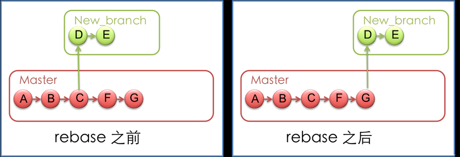
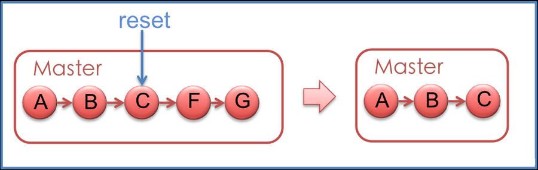

Git
初始化版本库
Git 通常有两种方式来进行初始化:
git clone:
这是较为简单的一种初始化方式，当你已经有一个远程的Git版本库，只需要在本地克隆一份
例如:
$ git clone git://github.com/someone/some_project.git some_project
上面的命令就是将'git://github.com/someone/some_project.git'这个URL地址的远程版本库完全克隆到本地some_project目录下面, 如果想要设置自己的git配置,就git init初始化.git文件.创建自己的版本库,也可以git branch new_branch创建自己的分支.
$ git remote add origin git://github.com/someone/some_project.git
设置远程服务器别名为origin,这样将代码提交的时候就可以执行以下命令:
$ git push origin #将代码提交到origin的master上面(默认)
git init和git remote：
这种初始化方式稍微复杂一些
例如:
$ mkdir [yourworkname] #本地创建一个工作目录
$ cd [yourworkname] #进入这个目录
$ git init #初始化版本库,即生成.git,就会对该目录下的文件进行版本控制
Git以后，你会看到目录下面自动生成.git文件,用于版本管理使用(非常重要的文件,不要轻易改动),这时候如果你需要将它放到远程服务器上，可以在远程服务器上创建一个目录，并把可访问的URL记录下来，此时你就可以利用'git remote add'命令来增加一个远程服务器端，
例如：
$ git remote add origin git://github.com/someone/another_project.git
上面的命令就会增加URL地址为'git: //github.com/someone/another_project.git'，名称为origin的远程服务器，以后提交代码的时候只需要使用 origin别名即可
Git 的基本命令
现在我们有了本地和远程的版本库，让我们来试着用用Git的基本命令：
git pull：
从其他的版本库（既可以是远程的也可以是本地的）将代码更新到本地，例如：'git pull origin master'就是将origin这个版本库的代码更新到本地的master主枝，该功能类似于SVN的update
git add：
是 将当前更改或者新增的文件加入到Git的索引中，加入到Git的索引中就表示记入了版本历史中，这也是提交之前所需要执行的一步，例如'git add app/model/user.rb'就会增加app/model/user.rb文件到Git的索引中，也可以使用git add .来加入当前工作空间所有修改过或者新增的文件.
git rm：
从当前的工作空间中和索引中删除文件，例如'git rm app/model/user.rb'，该功能类似于SVN的rm、del
git commit：
提交当前工作空间的修改内容，类似于SVN的commit命令，例如'git commit -m story #3, add user model'，提交的时候必须用-m来输入一条提交信息，该功能类似于SVN的commit
git push：
将本地commit的代码更新到远程版本库中，例如'git push origin'就会将本地的代码更新到名为orgin的远程版本库中
git log：
查看历史日志，该功能类似于SVN的log
git revert：
还原一个版本的修改，必须提供一个具体的Git版本号，例如'git revert bbaf6fb5060b4875b18ff9ff637ce118256d6f20'，Git的版本号都是生成的一个哈希值
git branch：
对分支的增、删、查等操作，例如'git branch new_branch'会从当前的工作版本创建一个叫做new_branch的新分支，'git branch -D new_branch'就会强制删除叫做new_branch的分支，'git branch'就会列出本地所有的分支
git checkout：
Git的checkout有两个作用，其一是在不同的branch之间进行切换，例如'git checkout new_branch'就会切换到new_branch的分支上去；另一个功能是还原代码的作用，例如'git checkout app/model/user.rb'就会将user.rb文件从上一个已提交的版本中更新回来，未提交的内容全部会回滚
git rebase：
用下面两幅图解释会比较清楚一些，rebase命令执行后，实际上是将分支点从C移到了G，这样分支也就具有了从C到G的功能

git reset：
将当前的工作目录完全回滚到指定的版本号，假设如下图，我们有A-G五次提交的版本，其中C的版本号是 bbaf6fb5060b4875b18ff9ff637ce118256d6f20，我们执行了'git reset bbaf6fb5060b4875b18ff9ff637ce118256d6f20'那么结果就只剩下了A-C三个提交的版本

Git允许我们在版本的历史之间穿梭，使用命令git reset --hard commit_id。
穿梭前，用git log可以查看提交历史，以便确定要回退到哪个版本。
要重返未来，用git reflog查看命令历史，以便确定要回到未来的哪个版本。
git stash：
将当前未提交的工作存入Git工作栈中，时机成熟的时候再应用回来，这里暂时提一下这个命令的用法，后面在技巧篇会重点讲解
git config：
利用这个命令可以新增、更改Git的各种设置，例如'git config branch.master.remote origin'就将master的远程版本库设置为别名叫做origin版本库，后面在技巧篇会利用这个命令个性化设置你的Git，为你打造独一无二的 Git
git tag：
可以将某个具体的版本打上一个标签，这样你就不需要记忆复杂的版本号哈希值了，例如你可以使用'git tag revert_version bbaf6fb5060b4875b18ff9ff637ce118256d6f20'来标记这个被你还原的版本，那么以后你想查看该版本时，就可以使用 revert_version标签名，而不是哈希值了